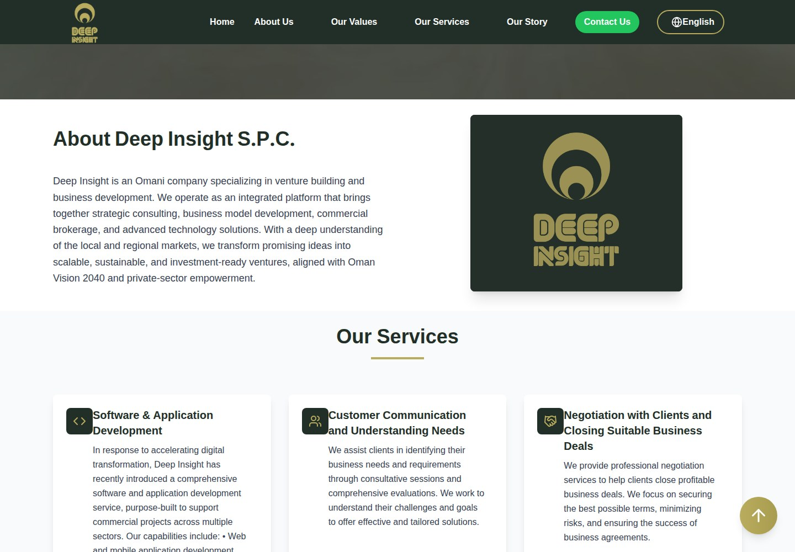
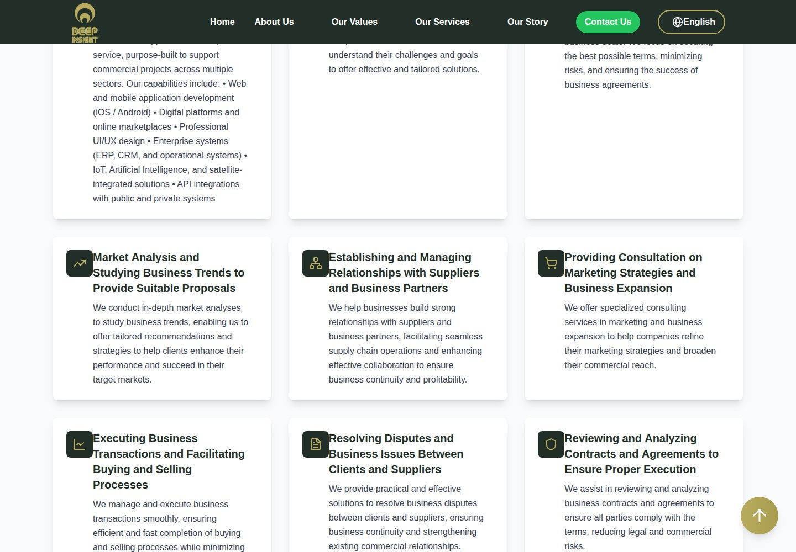
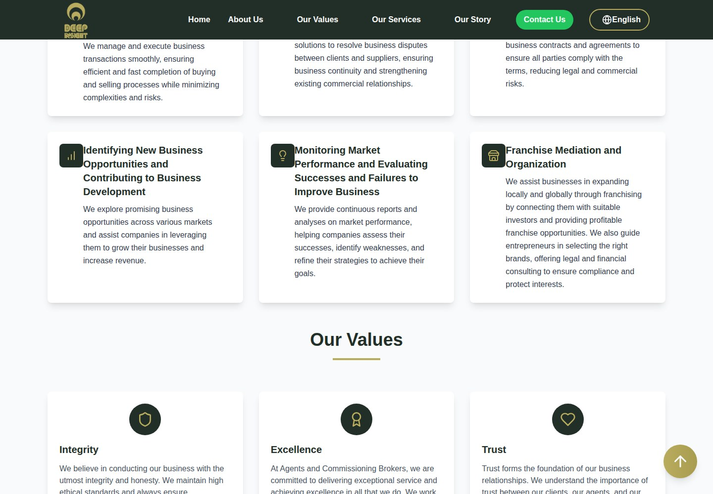
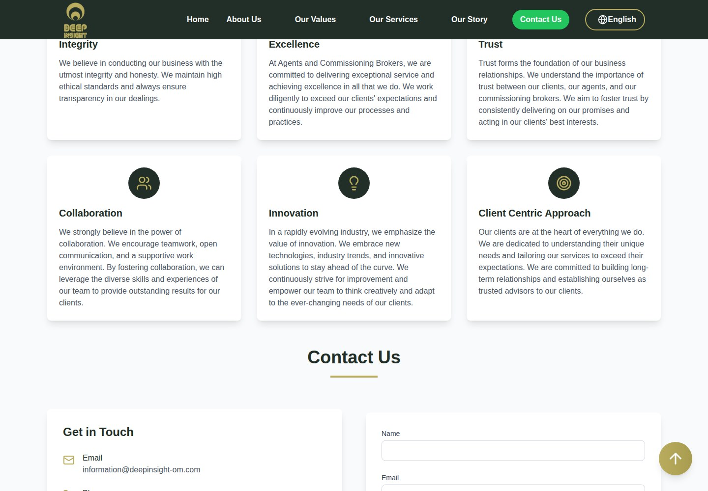
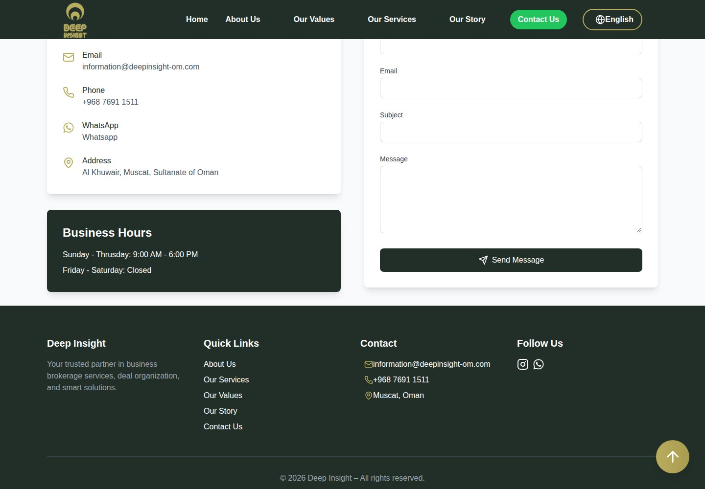
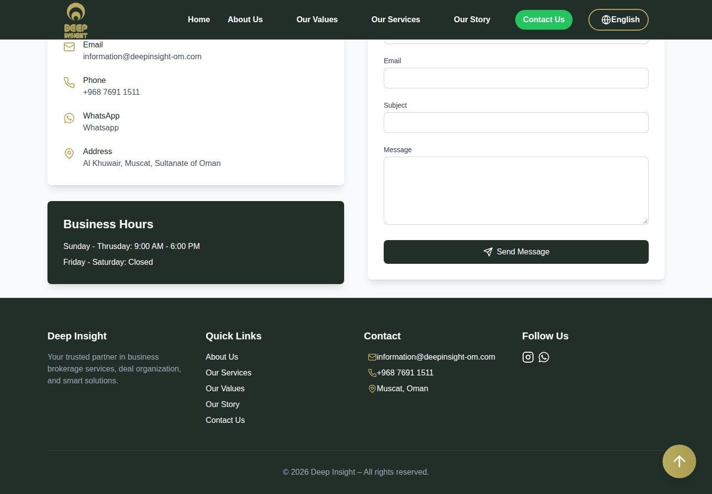
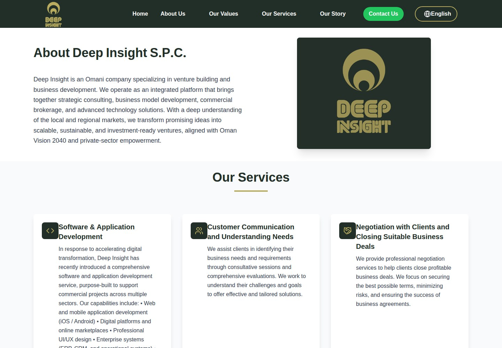
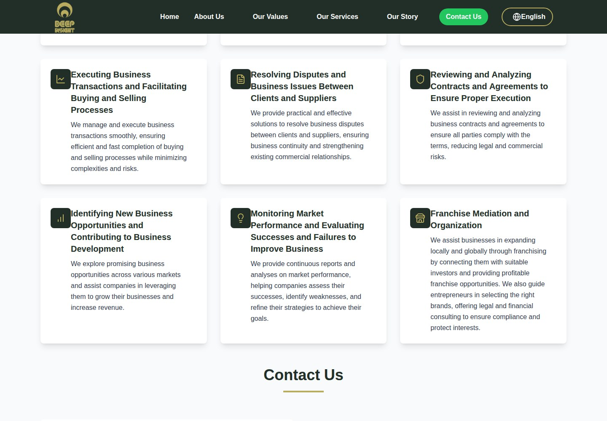
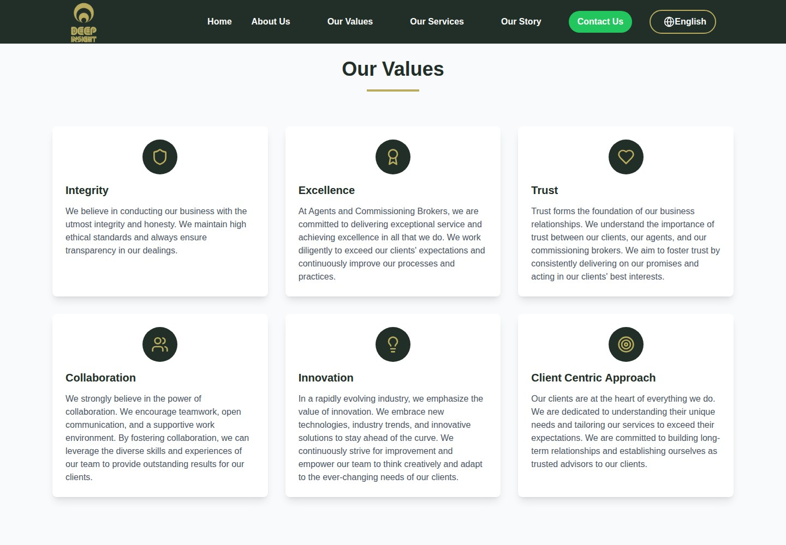
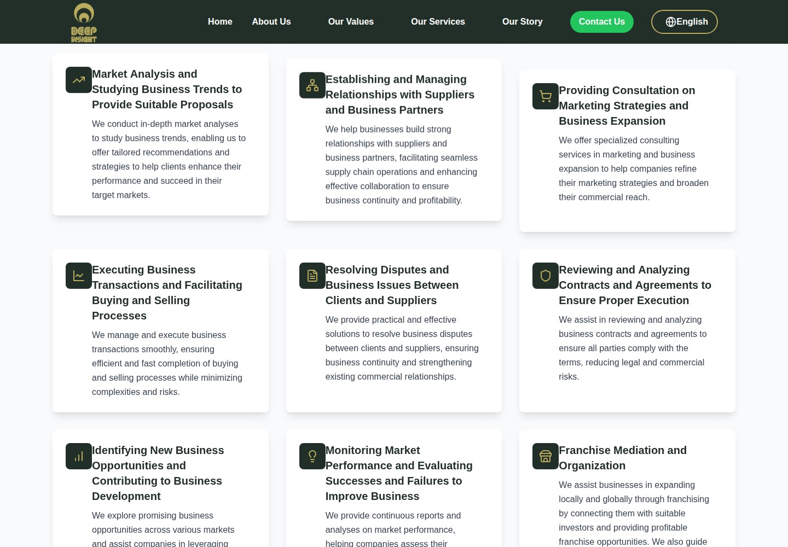

Deep Insight
Insight for business growth.

WHAT IT IS
Business brokerage, venture building, and business-development advisory; software and application development is also listed as a service.
The company presents itself as a strategic partner offering business-development and brokerage services, from identifying client needs and analyzing markets to facilitating transactions and partnerships. It also describes software/application development capabilities and says it supports ventures from ideation through launch and growth. These are descriptions on the site, not independently verified delivery outcomes.
This case study documents what the linked website presents. Individual contribution to this project has not been confirmed.
WHAT THE WEBSITE OFFERS
- Business-needs discovery through consultative sessions and evaluations (homepage and /services).
- Negotiation and deal facilitation, including buying-and-selling processes (homepage and /services).
- Market and business-trend analysis with tailored recommendations (homepage and /services).
- Supplier/partner relationship support, plus marketing and business-expansion consulting (homepage and /services).
- Franchise mediation/organization, including connecting businesses with investors (homepage and /services).
- Software/application capability list: web/mobile apps, digital platforms/marketplaces, UI/UX, ERP/CRM/operational systems, IoT/AI/satellite-integrated solutions, and API integrations (homepage and /services; described capabilities, not demonstrated products).
- Story page describes strategy/business modeling, feasibility and financial analysis, partnership-building, project management, and digital transformation ( /story ).
- Contact details are displayed with email, phone, WhatsApp, address, business hours, and a contact form ( /contact ).
VISITOR JOURNEY
Navigate among Home, About Us, Our Values, Our Services, Our Story, and Contact Us using the site navigation/footer links.
AUTHENTIC SCREEN CAPTURES · 11
Inside the experience.
Genuine, distinct screen captures supplied for this project. No screenshots have been fabricated or duplicated.









